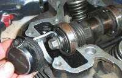
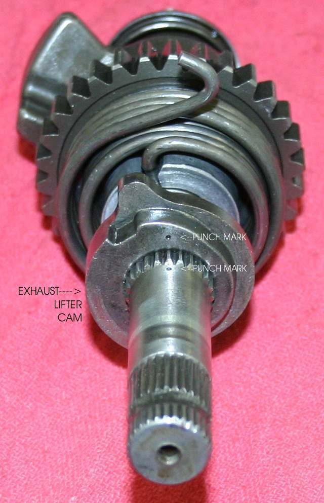
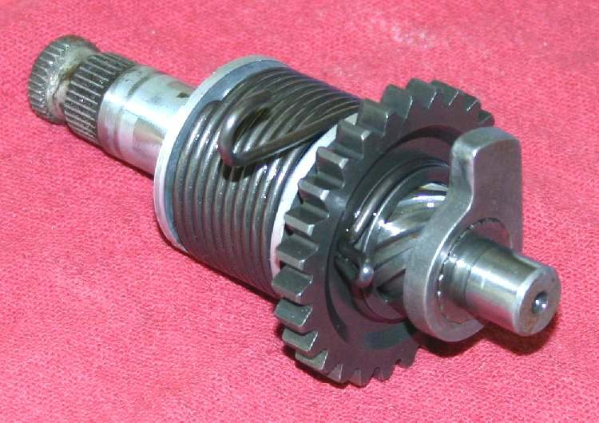
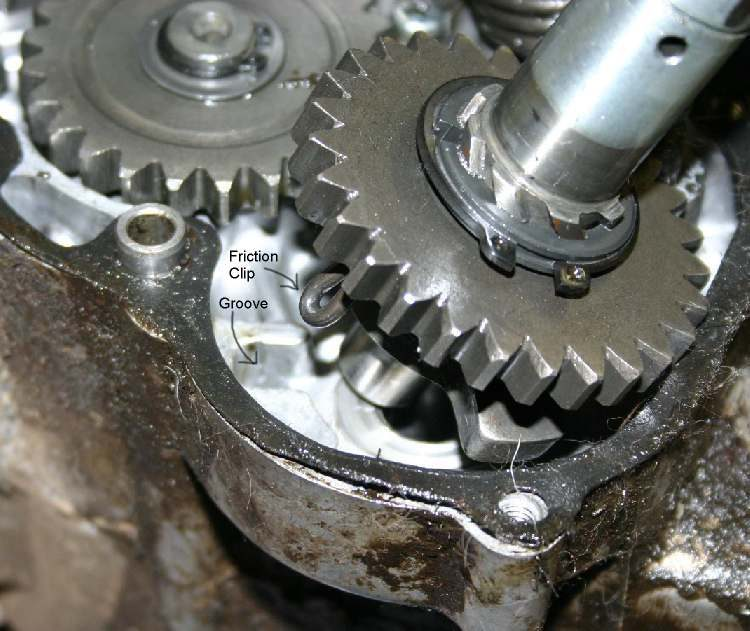

The kickstarter is the foot lever on the right side of many commuter bikes, used to turn the engine over by hand. Behind the cover it has a kick shaft, a ratchet, a ratchet spring, an idler gear and a return spring.
What it does
When you push the lever down, the ratchet locks onto a gear and turns the engine. When the engine fires, the ratchet slips so the lever is not driven. The return spring brings the lever back to the top. Worn ratchet teeth make the lever slip. A broken return spring leaves the lever hanging.
Signs it is worn or failing
- Lever drops without turning the engine: Kickstarter slips.
- Lever will not move or stays down: Kickstarter jammed.
- Lever kicks back hard against your foot: Kickstarter kicks back. This can hurt your ankle; it often points to ignition timing or a weak battery on EFI bikes, not the kickstarter itself.
When to replace it
Replace the lever if bent or the splines are worn. Replace the ratchet, ratchet spring or return spring when inspection shows worn teeth or weak springs. Internal parts are reached by removing the right engine cover, and on many engines by splitting the crankcase.
What to match when buying
- What people usually buy: the lever, its pinch bolt and the return spring.
- Match make, model, year and engine code. Spline count and lever length must match.
- Some engines use a different kick shaft for electric-start versions.
Fitting notes
- Lever fitting is a home job; set the lever so it does not touch the footpeg at the top of its swing.
- Internal parts: workshop. See Check the kickstart mechanism.
- Always kick with the ball of your foot and let the lever return under control.
- Two systems exist. In a primary-drive kickstarter, the engine turns over even in gear with the clutch lever pulled. In a transmission-drive one, the engine turns only if the clutch is engaged. To find out which, select gear, pull the clutch lever and kick. The system cannot be changed.
- Look for punch marks on the shaft, gear and compression-release cam. Match them on reassembly.
- Many electronic ignitions cut the spark at very low engine speed to stop kickback, so a slow, weak kick may not start the engine.
Reference (K-Light 125)
| Item | Value | PDF page |
|---|---|---|
| Kickstarter fitted | Yes, in addition to electric start | 19, 190 |
| Checks on removal | Return and ratchet spring tension, shaft to ratchet spline fit | 225 |